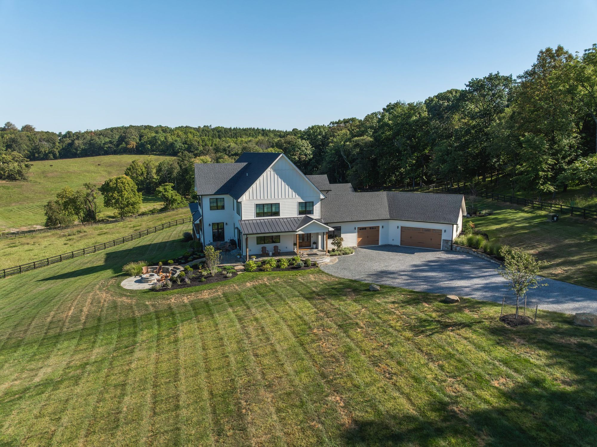

Loudoun County, Virginia
Custom home builder in Loudoun County, Virginia
We are based in Leesburg and we build here. Our completed work sits on land our clients already owned.
Where do you build in Loudoun County?
Total Build builds custom homes across Loudoun County on land you already own. Our built work in the county includes the timber-framed house on Paxson Road and the house on Round Top Lane. If your lot is in Loudoun, we can walk it with you and start from there.
How we build on your lot in Loudoun County
The county is part of the project.
Site walk and county feasibility
Grading, where the well and the septic can go, setbacks, what the site will actually support. Western Loudoun in particular has ground that has opinions. This is the work that decides whether a lot is the bargain it looks like.
Design and permitting with Loudoun County
Design, engineering and approvals run through the county, architects, structural engineers and civil engineers. We work closely with all of them and we do not control any of them, which is exactly why knowing the local process matters. We know which engineers to call and which specialists suit which problem.
The build
Your project manager runs the site and stays your point of contact.
Custom homes we've built in Loudoun County
Local work, not a map pin.
Loudoun County FAQ
What people ask before they call.
What does a custom home cost in Loudoun County?
There is no single number, and anyone who gives you one before seeing your lot is guessing. Cost follows what your land requires, how large the house is, and the finishes you choose. We start from your non-negotiables and price the upgrades separately.
How long does Loudoun County take to approve a build?
That is the county's answer to give, not ours, and it moves. What we can tell you is who to submit to, in what order, and what they will ask for, because we have been through it here repeatedly. We set out the schedule for your specific home at the start and keep you current on where it stands.
Do you build on my lot?
Yes, and we will walk it with you before anything is drawn. If you have not bought land yet, that is common. Plenty of our clients come to us before they have, and we can help you look.
Is an older Loudoun property cheaper to build on?
It often is, and in this county that matters more than most. Land with an older house on it may already carry a driveway, a well, a septic system or a usable foundation footprint. Putting that infrastructure in from scratch on a raw Loudoun lot is a serious share of the budget.
Start your Loudoun County custom home.
Tell us about the home you have in mind. We will be in touch personally, within a couple of days.
Start a conversation(703) 634-9211 · info@totalbuild.com · Leesburg, Virginia